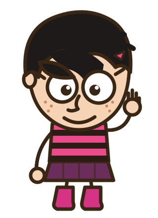

Escolha, confirme e entregue o computador. A partir daí, ninguém mais vê esta tela — nem os pais.
Menino

Menina
Depois de confirmar, a escolha some da tela e fica trancada até alguém apertar o play.